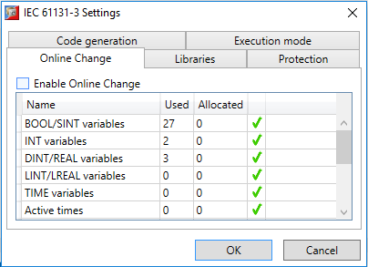
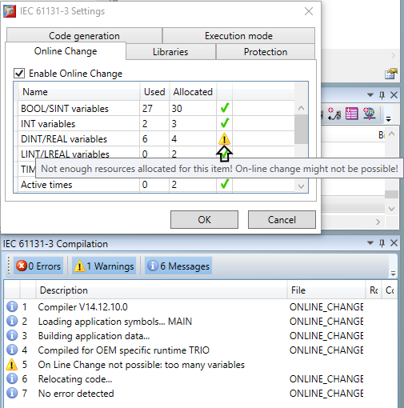
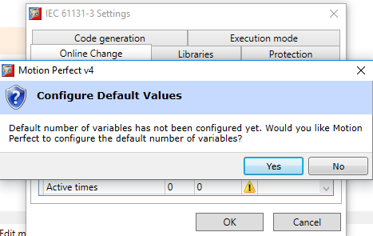
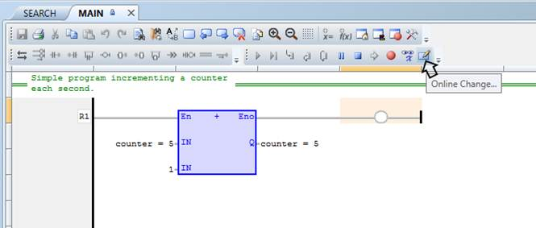
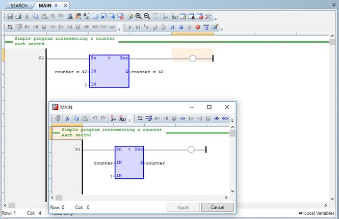

Sometimes a change in a running program’s code might be needed, for example, to update a counter increment value. Usually, the task needs to be stopped (if it is running), the change made and the task recompiled and restarted.
Now Motion Perfect supports On-line Change, which allows a running program’s code to be modified while the task is running and the changes applied online (i.e. without stopping the running task).
To enable this feature for a task, go to the task settings and select the On-line change settings page and click on the “Enable Online Change” check box to enable or disable the on-line change feature.
By default, this functionality is not enabled, because it brings some limitations to the IEC 61131-3 task.

The settings page presents a table with four columns:
|
Column |
Description |
|
Name |
Name of the resources required for On-line change. |
|
Used |
The value of used resources. This usually is the number of variables declared in the variables editor of the specified type. |
|
Allocated |
The value of allocated resources. This value needs to be greater by the “Used” resources value. This is the predefined maximum number of variables that could be created and used with online change, without rebuilding the whole task. |
|
Status |
The status column is a quick visual indicator whether the used resources exceed the allocated resources. In this case a small warning icon is displayed instead of the green check mark to indicate possible problem. |
In order to allow the declaration of new variables and blocks, you have to define the amount of memory to be allocated in the task for each type of data. This includes:
The number of variables of each type actually used in the task is given as a report at the end of each build. Changes are allowed until you exceed the sizing for at least one type of data. At this time, if you need to declare new variables, you have to stop the task, change the configuration of memory sizing rebuild the task.
When the used resources exceed the allocated resources (e.g. the number of variables in the variables editor exceeds the specified number of allocated variables) on-line change might not be possible so a corresponding warning is issued during compilation and on this settings page:

When enabling On-line change, Motion Perfect will suggest automatically configuring the default values for resources. It is best that this happens after a fresh compilation of the IEC 61131-3 task to ensure that the values for the used resources are up to date.

When On Line change is enabled, you can perform on the fly the following kinds of changes:
The following kinds of changes are not allowed:
In addition, the following programming features that are not safe during a change are forbidden:
When a program needs to be edited while the task is running, it needs to be open inside an editor in Motion Perfect.
The on-line editor is a popup modal dialog that is displayed on top of the original source code editor and is launched by a button on the toolbar:

This editor is a limited version of the normal source code editor that provides functionality for modifying the source code of the program and applying the changes without stopping the running task. The modified source code change happens between two consecutive cycles of the task on the controller.
